Net radiation of land surfaces
Looking at site scale radiation budgets
Measuring net all-wave radiation over totem field
Learning objectives
- Define to components that make up net all-wave radiation at the land-surface
- Describe how net all-wave radiation (\(R_n\)) is controlled by the weather conditions
- Explain how \(R_n\) is controlled by canopy structure and surface properties
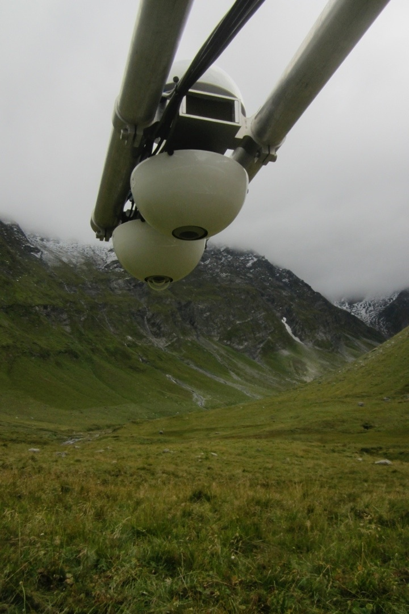
Net all-wave radiation (\(R_n\))
\(R_n\) represents the amount of available energy at Earth’s surface after all the radiation exchanges have taken place.
- Negative: the surface is loosing energy to the the atmosphere/space
- Positive: the surface is gaining energy from the the atmosphere/space
\[ R_n = (SW \downarrow - SW \uparrow) + (LW \downarrow - LW \uparrow) \qquad(1)\]
Net all-wave radiation (\(R_n\))
\(R_n\) is the flux density of ALL radiation. ie. the sum of component flux densities: Net short-wave radiation (\(SW^*\)) and net long-wave radiation (\(LW^*\)):
\[ R_n = SW^* + LW^* \qquad(2)\]
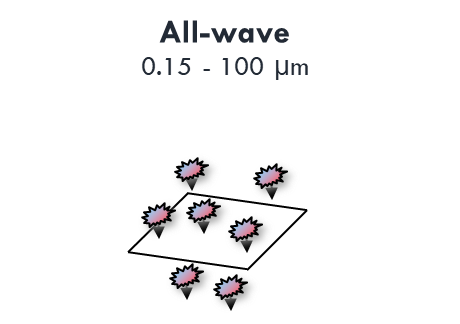
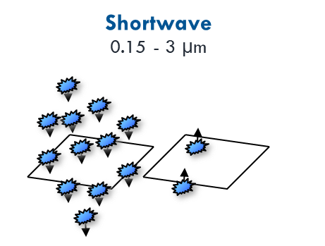
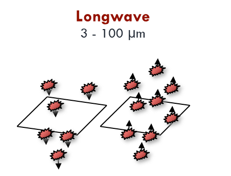
A net radiometer
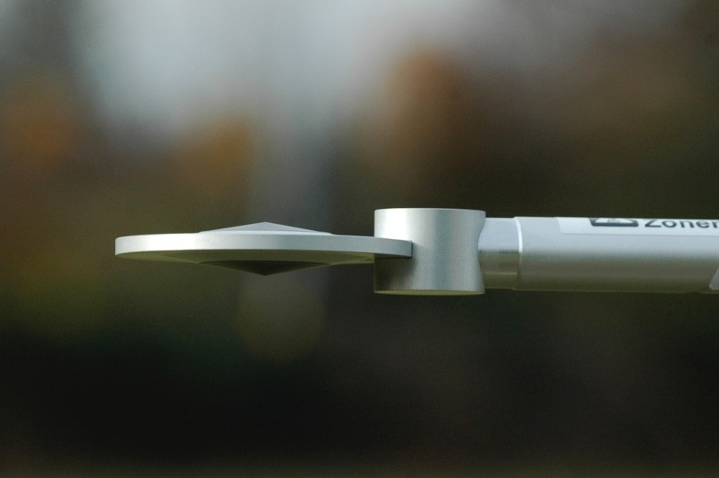Component Fluxes
Recall that \(SW\) is not emitted by Earth’s surface, but \(LW\) is!
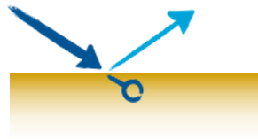
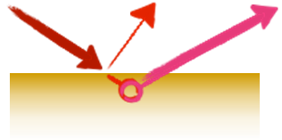
Absorbed : available energy for other processes
The Surface Energy Balance
We can define \(R_n\) from the perspective of the Earth’s surface in term’s of it’s energy balance. How much energy is absorbed vs. how much is emitted?
\[ SW^* = SW \downarrow (1 - \alpha) \qquad(3)\] \[ LW^* = \epsilon LW \downarrow - \epsilon \sigma_b T_s^4 \qquad(4)\] \[ R_n = SW \downarrow (1 - \alpha) + \epsilon LW \downarrow - \epsilon \sigma_b T_s^4 \qquad(5)\]
\(R_n\) is the main energy source driving near-surface climates. It can be positive (usually day) or negative (usually night).
Test your knowledge (iClicker)
\(R_n\) is the energy available for other processes such as (select any valid answer):
- Photosynthesis
- Evaporation
- Convection
Connectivity of energy and mass
The radiation budget impacts all other “budgets” in Earth’s climate system.
- Water & carbon balances are directly influenced by the flux of energy into our out of the surface.
Diurnal Variation
In the following slides, we’ll look at examples of \(R_n\) and its four component fluxes over the single day periods that show the contrasting effects of weather conditions on \(R_n\).
- Clear skies during summer
- Rainy conditions during fall
- Snow-covered ground in winter
- Snowmelt
Hot & Sunny
Total for the day:
\(SW^* =\) 0 \(MJ m^{-2}\)
\(LW^* =\) 0 \(MJ m^{-2}\)
\(R_n =\) 0 \(MJ m^{-2}\)
Cloudy & Rainy
Total for the day:
\(SW^* =\) 0 \(MJ m^{-2}\)
\(LW^* =\) 0 \(MJ m^{-2}\)
\(R_n =\) 0 \(MJ m^{-2}\)
Cold and Snowy
Total for the day:
\(SW^* =\) 0.5 \(MJ m^{-2}\)
\(LW^* =\) -0.6 \(MJ m^{-2}\)
\(R_n =\) -0.2 \(MJ m^{-2}\)
During Snowmelt
Total for the day:
\(SW^* =\) 0.8 \(MJ m^{-2}\)
\(LW^* =\) 0.4 \(MJ m^{-2}\)
\(R_n =\) 1.2 \(MJ m^{-2}\)
Units (iClicker)
The measured radiation data are presented in W m-2, so why are daily totals presented in MJ m-2?
- W = J s-1
- W = MJ d-1
- W = MJ h-1
A Full Year?
Total flues over one year:
\(SW^* =\) 3.16 \(GJ m^{-2}\)
\(LW^* =\) -1.08 \(GJ m^{-2}\)
\(R_n =\) 2.07 \(GJ m^{-2}\)
Does it vary between years?
Summary of our interpretation
- Strong correlation between \(R_n\) and \(SW\downarrow\)
- Daily \(R_n\) variation is mainly driven by the solar cycle
- Daytime \(SW^*\) is only partly offset by \(LW^*\)
- At night \(LW^*\) is unopposed
- Cloud cover increases \(LW^*\), snow cover reduces \(SW^*\)
- \(LW^*\) is more negative when ground is warmer than the air
- \(LW^*\) can be positive if the air is warmer than the ground
Effect of Landcover
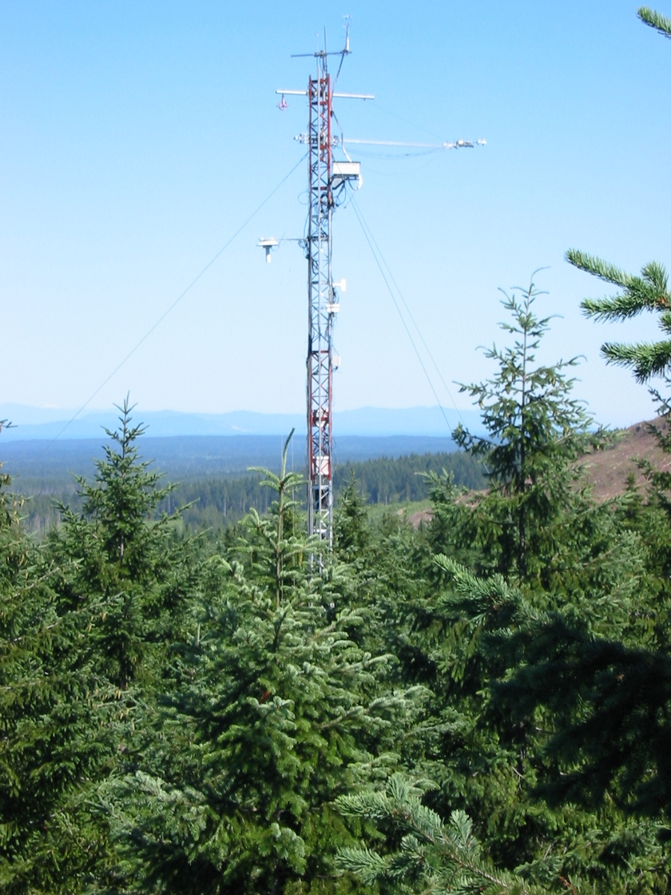
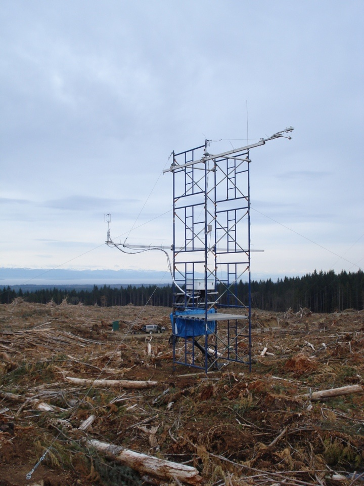
Landcover Effects
- Measurements show that \(R_n\) in a clearcut is \(\approx\) 24% less than in uncut forest.
- Why? \(SW \downarrow\) and \(LW \downarrow\) didn’t change drastically, but \(SW \uparrow\) and \(LW \uparrow\) did.
Diurnal Course
- \(SW \uparrow\) higher in the clearcut
- Larger albedo
- \(LW \uparrow\) higher in the clearcut
- Higher T
Daily Totals
iClicker
If the forest has higher \(R_n\) than the clearcut, where is that extra energy going? (Note there are two correct answers, you only need to select one)
- A. Photosynthesis
- B. Albedo
- C. Longwave emissions
- D. Evapotranspiration
- E. Heating the soil
Nighttime Cooling
Nighttime surface cooling is only controlled by \(LW\):
\(SW \downarrow = 0\)
\(R_n = \epsilon LW \downarrow - \epsilon \sigma_b T_s^4\)
- The \(LW^*\) is usually negative
- Cloud has a large effect on \(LW \downarrow\)
- Cloudless nights have lowest \(LW \downarrow\)
- Most negative \(LW^*\)
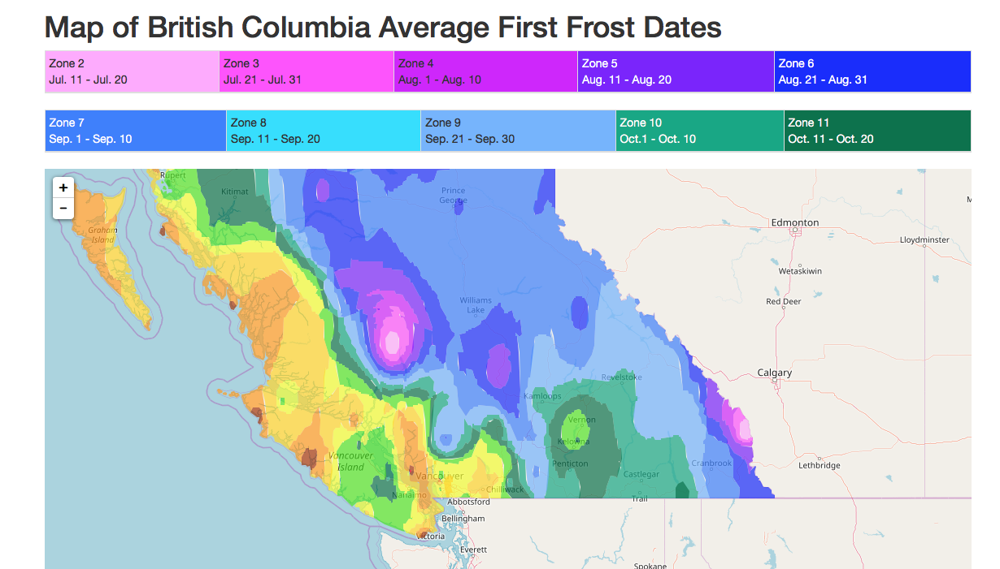
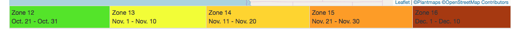
View factor
- The fraction of radiation leaving an object that is intercepted by other objects
- An object’s hemispherical view occupied by other objects
- The sky view factor, \(\psi_{sky}\) effects \(LW^*\) at night
- Because the sky is usually ‘cold’ and an effective heat sink
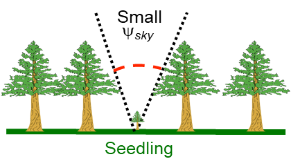

An Open Field \(\psi_{sky}\) = 0.9
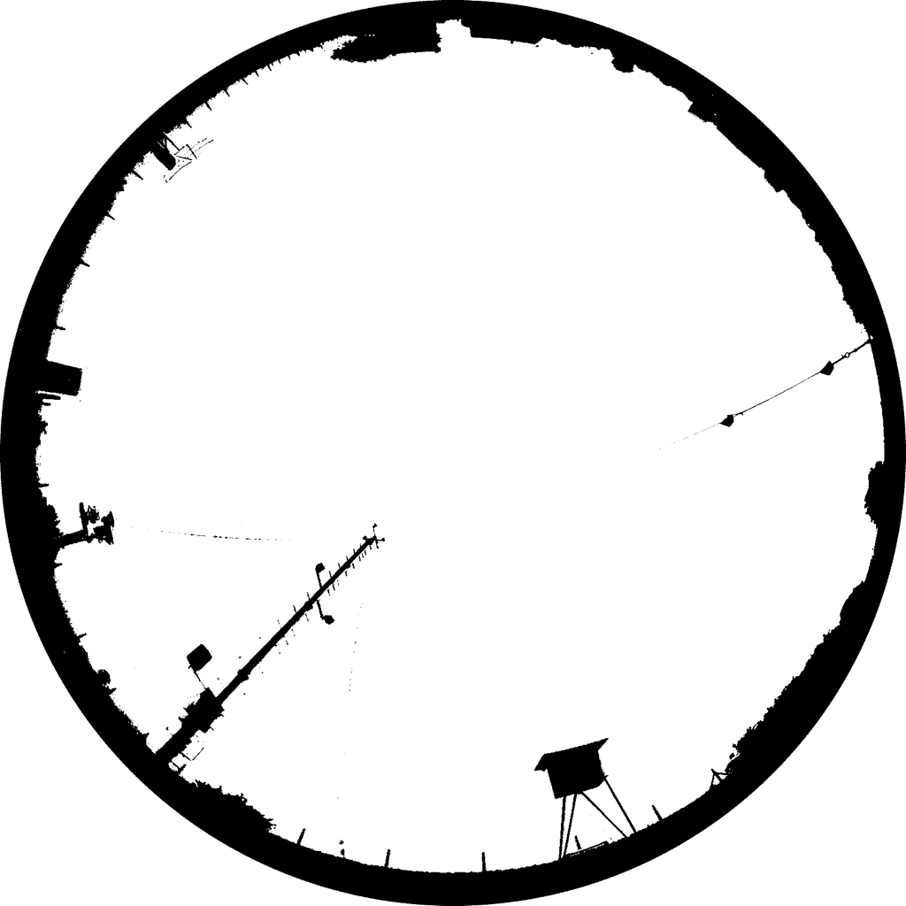
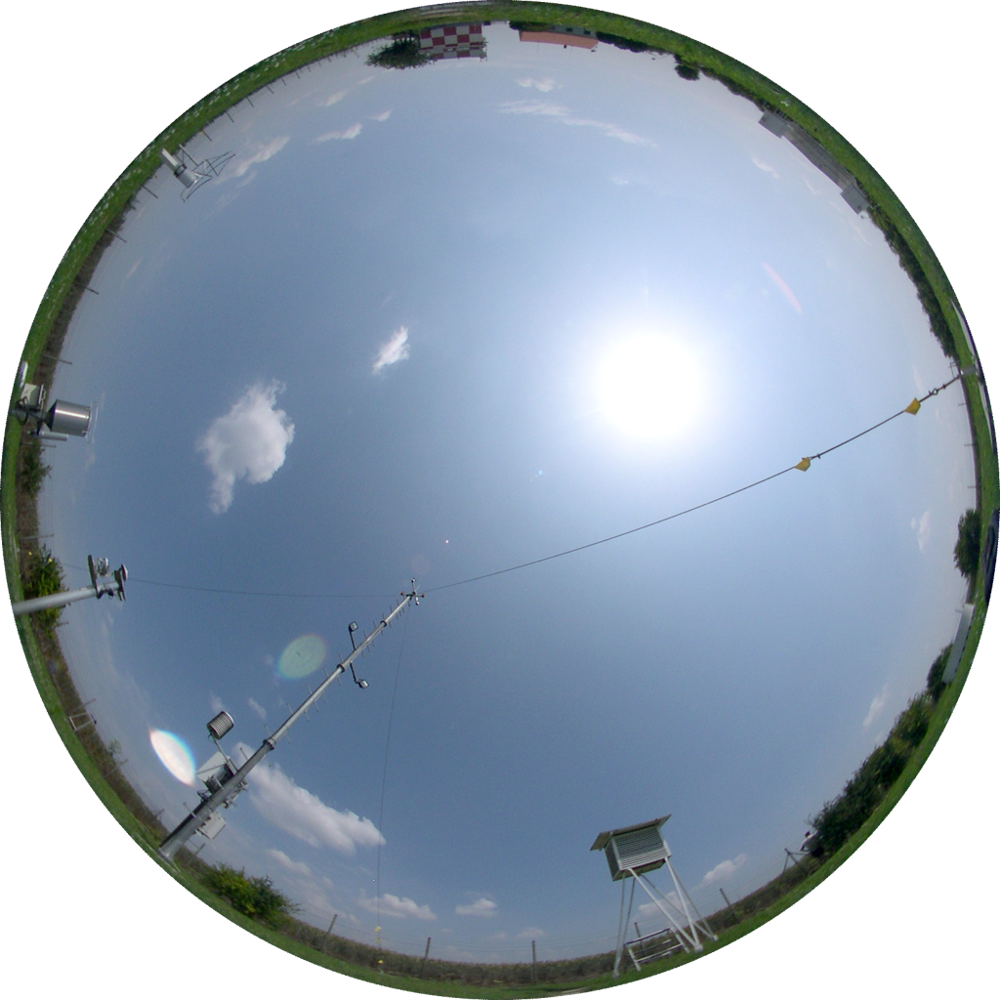
Conifer Forest \(\psi_{sky}\) = 0.6
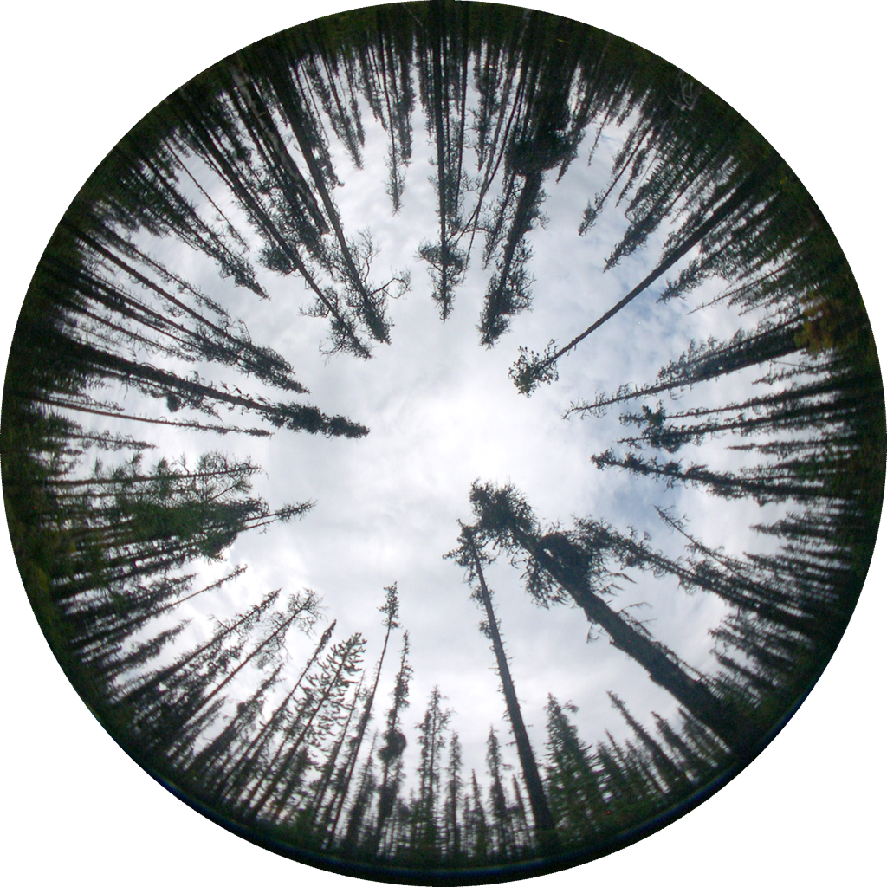
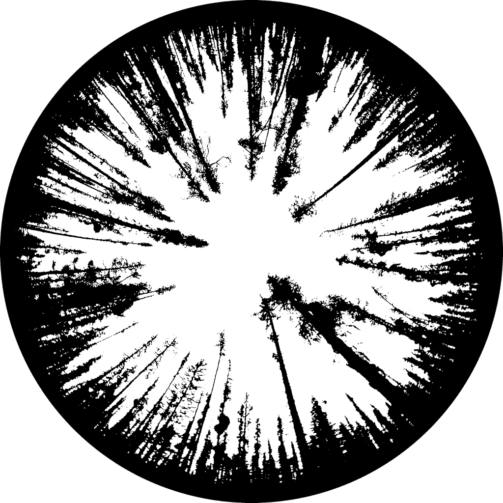
Deciduous Forest \(\psi_{sky}\) = 0.2
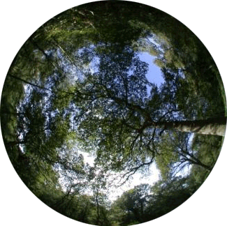
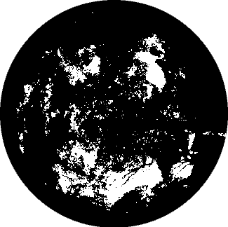
Urban courtyard \(\psi_{sky}\) = 0.2
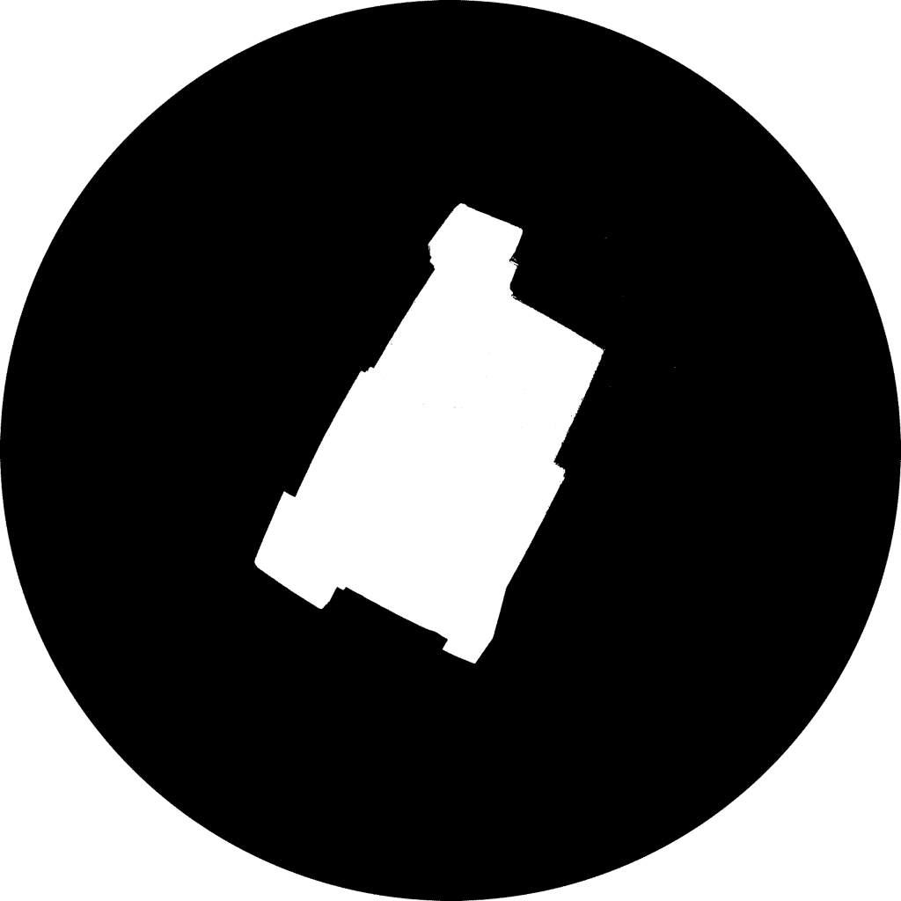
Why is this important?
\(\psi_{sky}\) is a “weighting factor” expressing the relative importance of sky in the long-wave balance of an object (e.g., a seedling).
\[ LW^* = \psi_{sky}\epsilon LW \downarrow - (1-\psi_{sky})\epsilon \sigma_b T_s^4 \qquad(6)\]
- The higher \(\psi_{sky}\) the lower the \(LW^*\) of the seedling
- Sky usually more than 30K colder than the ground

Why is this important?
This study recommended strip clearcuts <2h (h = stand height) because \(T_{min}\) decreases with distance from stand edge.
- Frosts can kill lodgepole pine seedlings during their germination period.
- Size of clearcut affects minimum temperatures near the soil surface
Sky view with distance from forest edge
Take home points
- Distinguish between net shortwave (\(SW^*\)), net longwave (\(LW^*\)) and net all-wave radiation (\(R_n\))
- The magnitude of \(R_n\) is controlled by surface properties:
- Albedo, surface temperature, emissivity
- The magnitude of \(R_n\) is also controlled by the surrounding 3D surface
- Sky view influences \(LW^\) at night
- Surface properties can be modified to control surface climates